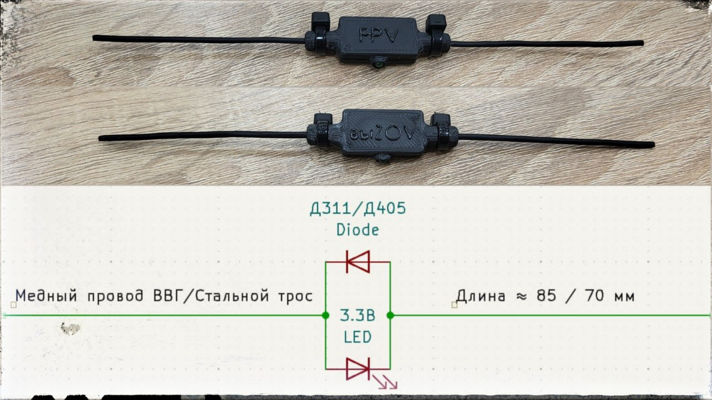

РЭБ тест, карманный вариант.
ℹ️ Определяет наличие излучения на определенных частотах.
Простейшее решение для проверки - использование диода и светодиода подключенных к отрезкам кабеля выступающим в качестве антенны.
⏭️ Электромагнитные волны преобразуются в электрический ток на антенне и дают накал светодиоду, что говорит о работоспособности излучателя.
Смотрите примеры работы на видео (ниже).
Устройство является
пассивным
и работает
только в области сильного электромагнитного поля
Состав комплектующих
1. Диод Д311 (Д405)
2. Светодиод 3.3В
3. Отрезок проволоки (троса)(2 шт.)
📎 Схема и фото в шапке публикации
📎
Порядок настройки
Настройка на конкретные диапазоны частот производится за счет изменения длины проволоки (троса)
по аналогии с настройкой дипольных антенн
.
➡️ Для диапазона
380-1000 МГц
оптимальной является длина
85мм (ВВГ 0,75-1,5 мм^2) или 70мм (стальной многожильный трос 1,5-2 мм)
.
Определение работоспособности излучателя на более высоких частотах затруднительно в силу необходимости более точной настройки и слабого свечения индикатора-светодиода.
✅ Данный РЭБ тест актуален, если необходимо
оперативно
проверить работоспособность оборудования.
#РЭР_РЭБ
Это вложение из поста t.me/platforma_fpv/969/974

Детали для карманного РЭБ теста.
#3Д_для_периферийных_устройств
Веб-страница создана автоматически на основе поста пользователя ПЛАТФОРМА_FPV